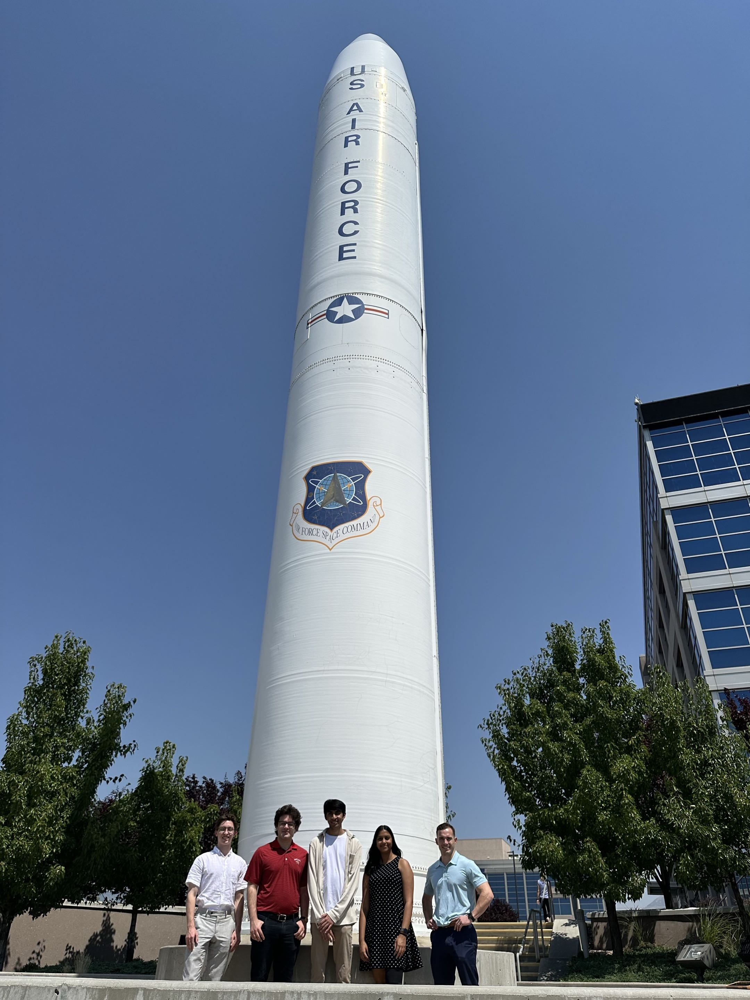

JHU Applied Physics Lab Intern
As a guidance, navigation, and controls intern at the Johns Hopkins Applied Physics Lab, I spent two summers working with Kalman filter error models for inertial navigation systems. I implemented novel filter measurements for covariance analysis software, I improved model fidelity of filters used for ground-testing sensor systems, and I helped develop software to generate estimated trajectories from sensor data.
Additionally, I developed a custom MongoDB database for storing and querying flight test data, which was capable of automatically adjusting database structure to accept novel file types without needing user input. I also developed a GUI tool for querying this database for users without MongoDB experience.

UMD CDCL
As a guidance, navigation, and controls intern at the Johns Hopkins Applied Physics Lab, I spent two summers working with Kalman filter error models for inertial navigation systems. I implemented novel filter measurements for covariance analysis software, I improved model fidelity of filters used for ground-testing sensor systems, and I helped develop software to generate estimated trajectories from sensor data.
Additionally, I developed a custom MongoDB database for storing and querying flight test data, which was capable of automatically adjusting database structure to accept novel file types without needing user input. I also developed a GUI tool for querying this database for users without MongoDB experience.